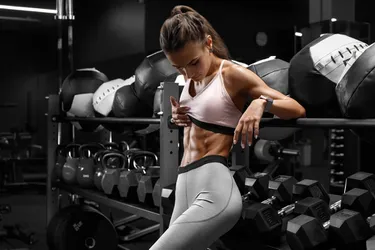
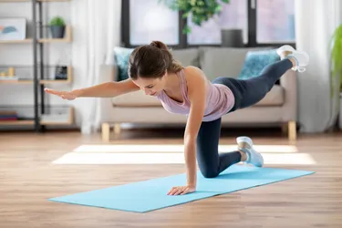
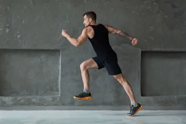

DFITNESS
ARTICULOS
NOTICIAS
TIENDA
INDUMENTARIA
MAQUINAS
SUPLEMENTOS
EQUIPAMIENTOS
REGISTRO
CONTACTO
BUSCAR
¿Y qué tal entrenar en un entorno natural?
Un deporte de aventura que entrena todo el cuerpo y tiene premios inesperados

Entrenar los hipopresivos, el secreto para unos abdominales perfectos
Las señales que indican que estás sobreentrenado y cómo evitarlo.

El poder de las planchas. Por qué deberías empezar a hacerlas.

Sprints. Los entrenamientos que inhiben el apetito y las razones científicas.